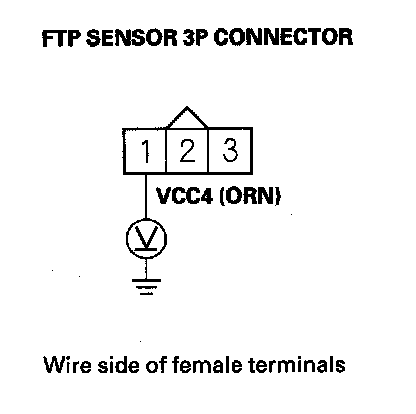
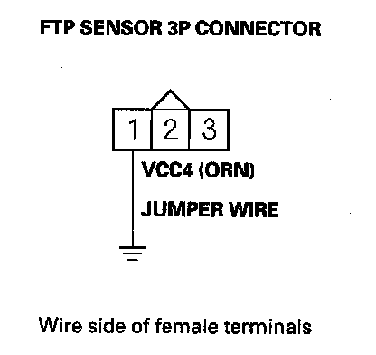
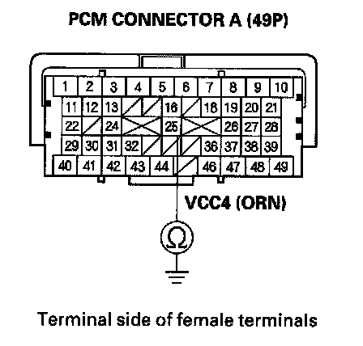
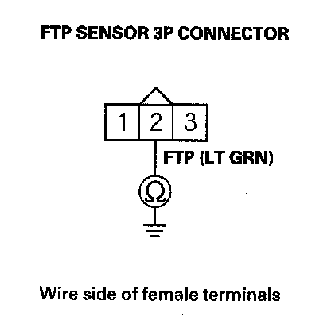

DTC Troubleshooting
DTC P0452: FTP Sensor Circuit Low VoltageNOTE: Before you troubleshoot, record all freeze data and any on-board snapshot, and review the general troubleshooting information.
1. Turn the ignition switch ON (II).
2. Clear the DTC with the HDS.
3. Turn the ignition switch OFF.
4. Remove the fuel fill cap.
5. Turn the ignition switch ON (II).
6. Check the FTP SENSOR in the DATA LIST with the HDS.
Is about - 7.3 kPa (-2.16 in.Hg, -55 mmHg), or 0.3 V or less indicated?
YES - Go to step 10.
NO - Go to step 7.
7. Install the fuel fill cap.
8. Start the engine.
9. Monitor the OBD STATUS for DTC P0452 in the DTCs MENU with the HDS.
Does the screen indicate FAILED?
YES - Go to step 10.
NO - If the screen indicates PASSED, intermittent failure, the system is OK at this time. Check for poor connections or loose terminals at the FTP sensor and the PCM. If the screen indicates NOT COMPLETED, go to step 5 and recheck.
10. Turn the ignition switch OFF.
11. Disconnect the FTP sensor 3P connector.
12. Turn the ignition switch ON (II).
13. Check the FTP SENSOR in the DATA LIST with the HDS.
Is about 7.3 kPa (2.15 in.Hg, 54.7 mmHg), or 4.90 V indicated?
YES - Go to step 24.
NO - Go to step 14.

14. Measure voltage between FTP sensor 3P connector terminal No. 1 and body ground.
Is there about 5 V?
YES - Go to step 20.
NO - Go to step 15.
15. Turn the ignition switch OFF.
16. Jump the SCS line with the HDS.
17. Disconnect PCM connector A (49P).

18. Connect FTP sensor 3P connector terminal No. 1 to body ground with a jumper wire.

19. Check for continuity between PCM connector terminal A25 and body ground.
Is there continuity?
YES - Go to step 32.
NO - Repair open in the wire between the PCM (A25) and the FTP sensor, then go to step 26.
20. Turn the ignition switch OFF.
21. Jump the SCS line with the HDS.
22. Disconnect PCM connector A (49P).

23. Check for continuity between FTP sensor 3P connector terminal No. 2 and body ground.
Is there continuity?
YES - Repair short in the wire between the PCM (A39) and the FTP sensor, then go to step 26.
NO - Go to step 32.
24. Turn the ignition switch OFF.
25. Replace the FTP sensor.
26. Reconnect all connectors.
27. Turn the ignition switch ON (II).
28. Reset the PCM with the HDS.
29. Do the PCM idle learn procedure.
30. Check for Temporary DTCs or DTCs with the HDS.
Is DTC P0452 indicated?
YES - Check for poor connections or loose terminals at the FTP sensor and the PCM, then go to step 1.
NO - Go to step 31.
31. Monitor the OBD STATUS for DTC P0452 in the DTCs MENU with the HDS.
Does the screen indicate PASSED?
YES - Troubleshooting is complete. If any other Temporary DTCs or DTCs were indicated in step 30, go to the indicated DTCs troubleshooting.
NO - If the screen indicates FAILED, check for poor connections or loose terminals at the FTP sensor and the PCM, then go to step 1. If the screen indicates NOT COMPLETED, keep idling until a result comes on.
32. Reconnect all connectors.
33. Update the PCM if it does not have the latest software, or substitute a known-good PCM.
34. Check for Temporary DTCs or DTCs with the HDS.
Is DTC P0452 indicated?
YES - Check for poor connections or loose terminals at the FTP sensor and the PCM. If the PCM was updated, substitute a known-good PCM, then recheck. If the PCM was substituted, go to step 1.
NO - Go to step 34.
35. Monitor the OBD STATUS for DTC P0452 in the DTCs MENU with the HDS.
Does the screen indicate PASSED?
YES - If the PCM was updated, troubleshooting is complete. If the PCM was substituted, replace the original PCM. If any other Temporary DTCs or DTCs were indicated in step 34, go to the indicated DTCs troubleshooting.
NO - If the screen indicates FAILED, check for poor connections or loose terminals at the FTP sensor and the PCM. If the PCM was updated, substitute a known-good PCM, then recheck. If the PCM was substituted, go to step 1. If the screen indicates NOT COMPLETED, keep idling until a result comes on.